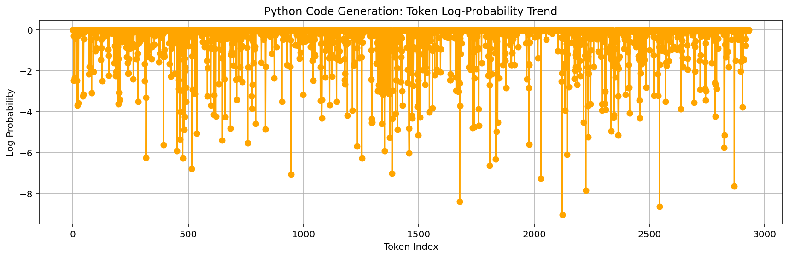
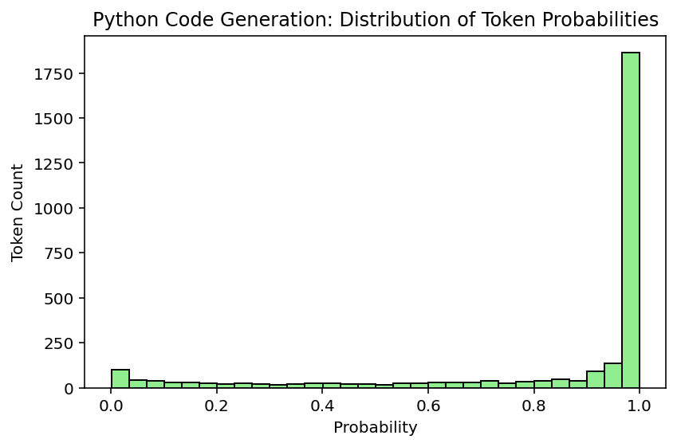
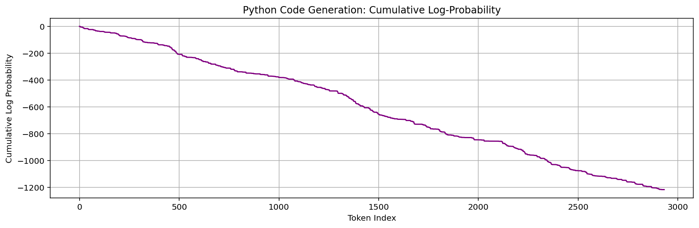
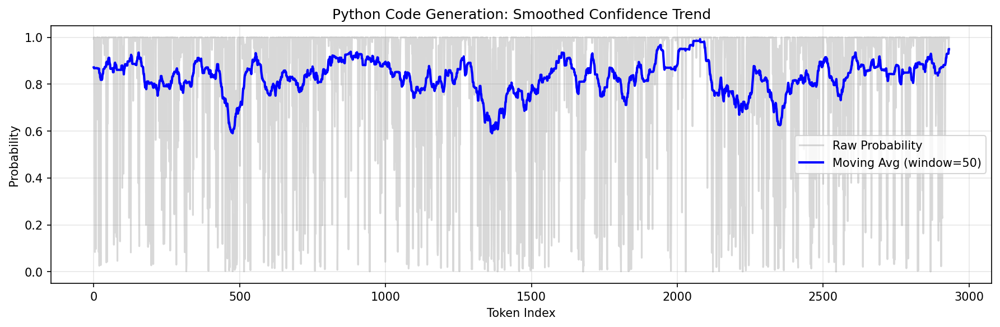
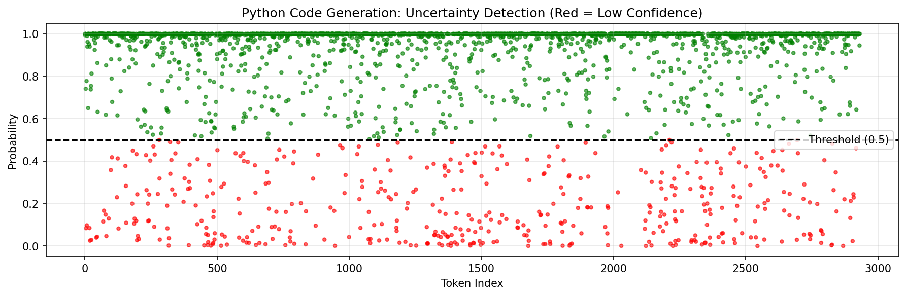
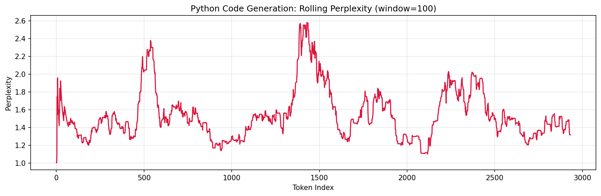
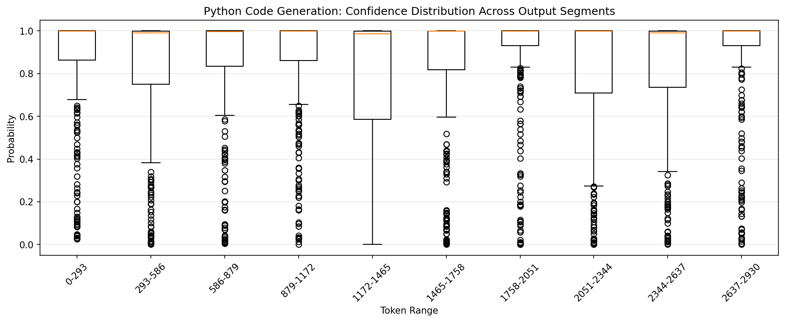
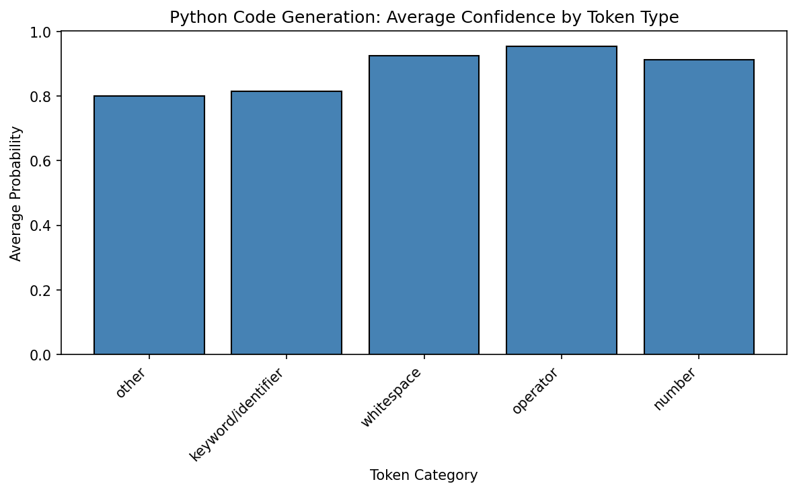
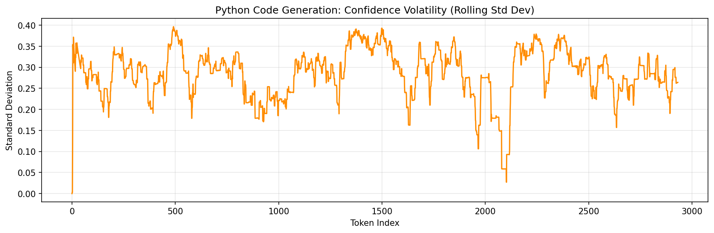
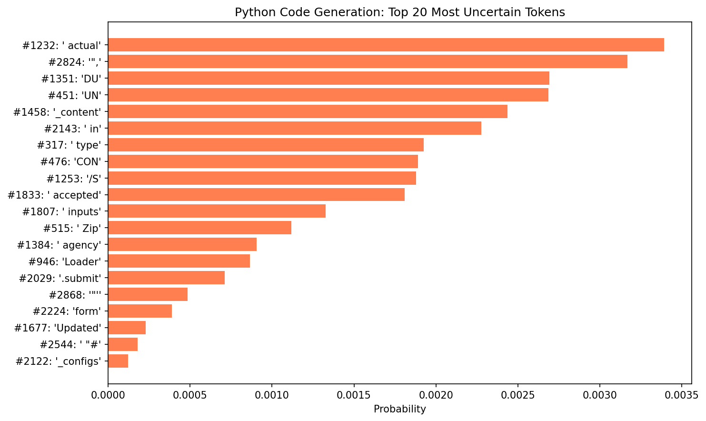

LLM Code Generation Report #19
Selected User Stories
Click to expand/collapse
Cluster (4,):
As a Data user, I want to have the 12-19-2017 deletions processed. As a UI designer, I want to redesign the Resources page, so that it matches the new Broker design styles. As a UI designer, I want to report to the Agencies about user testing, so that they are aware of their contributions to making Broker a better UX. As a DevOps engineer, I want New Relic to provide useful data across all applications. As a Broker user, I want the D1 file generation to be synced with the FPDS data load, so that I don't have to regenerate a file if no data has been updated. As a broker team member, I want to make some updates to the SQL codes for clarity. As a broker team member, I want to add the 00***** and 00FORGN PPoPCode cases to the derivation logic. As a broker team member, I want to derive FundingAgencyCode, so that the data quality and completeness improves. As a agency user, I want to map the FederalActionObligation properly to the Atom Feed. As a Broker user, I want to have PPoPZIP+4 work the same as the Legal Entity ZIP validations.
Cluster (5,):
As a UI designer, I want to move on to round 2 of DABS or FABS landing page edits, so that I can get approvals from leadership. As a UI designer, I want to move on to round 2 of Homepage edits, so that I can get approvals from leadership. As a UI designer, I want to move on to round 3 of the Help page edits, so that I can get approvals from leadership. As a Developer , I want to be able to log better, so that I can troubleshoot issues with particular submissions and functions. As a UI designer, I want to move on to round 2 of the Help page edits, so that I can get approvals from leadership. As a UI designer, I want to move on to round 2 of Homepage edits, so that I can get approvals from leadership. As a Website user, I want to access published FABS files, so that I can see the new files as they come in. As an owner, I want to be sure that USAspending only send grant records to my system. As a Broker user, I want to help create content mockups, so that I can submit my data efficiently. As a UI designer, I want to track the issues that come up in Tech Thursday, so that I know what to test and what want s to be fixed. As an Owner, I want to create a user testing summary from the UI SME, so that I can know what UI improvements we will follow through on. As a UI designer, I want to begin user testing, so that I can validate stakeholder UI improvement requests. As a UI designer, I want to schedule user testing, so that I can give the testers advanced notice to ensure buy-in. As an Owner, I want to design a schedule from the UI SME, so that I know the potential timeline of the UI improvements wanted. As an Owner, I want to design an audit from the UI SME, so that I know the potential scope of the UI improvements want ed. As an Owner, I want to reset the environment to only take Staging MAX permissions, so that I can ensure that the FABS testers no longer have access. As a Developer , I want my domain models to be indexed properly, so that I can get validation results back in a reasonable amount of time. As an Agency user, I want the header information box to show updated date AND time, so that I know when it was updated. As an owner, I only want zero-padded fields, so that I can justify padding. As a Broker user, I want to have updated error codes that accurately reflect the logic and provide enough information, so that I can fix my submission. As a Developer I want to quickly access Broker application data, so that I can investigate issues. As a FABS user, I want to have read-only access to DABS, so that I can view DABS pages without wanting two sets of permissions. As an agency user, I want a landing page to navigate to either FABS or DABS pages, so that I can access both sides of the site.
Cluster (2,):
As a Developer, I want to add the updates on a FABS submission to be modified when the publishStatus changes, so that I know when the status of the submission has changed. As a Developer, I want to add the GTAS window data to the database, so that I can ensure the site is locked down during the GTAS submission period. As a Developer , I want to update the FABS sample file to remove FundingAgencyCode after FABS is updated to no longer require the header. As a user, I want the publish button in FABS to deactivate after I click it while the derivations are happening, so that I cannot click it multiple times for the same submission. As a broker user, I want the historical FABS loader to derive fields, so that my agency codes are correct in the PublishedAwardFinancialAssistance table. As a Developer, I want the data loaded from historical FABS to include the FREC derivations, so that I can have consistent FREC data for USASpending.gov. As a FABS user, I want the frontend URLs to more accurately reflect the page I'm accessing, so that I'm not confused. As a Developer , I want the historical FPDS data loader to include both extracted historical data and FPDS feed data. As a Developer , I want to provide FABS groups that function under the FREC paradigm. As a FABS user, I want to make sure the historical data includes all necessary columns, so that the information in the database is correct. As a data user, I want to access two additional fields from the FPDS data pull. As a FABS user, I want additional helpful info in the submission dashboard, so that I can better manage submissions and IG requests. As a FABS user, I want to download the uploaded FABS file, so that I can get the uploaded file. As a Developer , I want to determine the best way to load historical FPDS data, so that I can load all FPDS data since 2007. As a FABS user, I want the language on FABS pages to be appropriate for me, so that I am not confused. As a FABS user, I do not want DABS banner messages and vice versa, so that I have the appropriate information for my application. As an agency user, I want to know when the submission periods start and end, so that I know when the submission starts and ends.
Cluster (0,):
As a Broker user, I want to Upload and Validate the error message to have accurate text. As a Developer, I want to update the Broker validation rule table to account for the rule updates in DB-2213. As a user, I want the flexfields in my submission file to appear in the warning and error files when the only error is a missing required element. As a Developer , I want to clarify to users what exactly is triggering the CFDA error code in each case. As a broker team member, I want to ensure the Broker resources, validations, and P&P pages are updated appropriately for the launch of FABS and DAIMS v1.1. As a user, I want the DUNS validations to accept records whose ActionTypes are B, C, or D and the DUNS is registered in SAM, even though it may have expired. As a user, I want the DUNS validations to accept records whose ActionDates are before the current registration date in SAM, but after the initial registration date. As an Agency user, I want to receive a more helpful file-level error when I upload a file with the wrong extension. As a Developer, I want to prevent duplicate transactions from being published and deal with the time gap between validation and the publishing decision.
Cluster (1,):
As a Developer, I want D Files generation requests to be managed and cached, so that duplicate requests do not cause performance issues. As a user, I want to access the raw agency published files from FABS via USAspending. As an Agency user, I want to be able to include a large number of flexfields without performance impact. As a Developer, I want to prevent users from double publishing FABS submissions after refreshing, so that there are no duplicates. As an Agency user, I want to be able to include a large number of flexfields without performance impact. As a website user, I want to see updated financial assistance data daily. As a Developer , I want to ensure that attempts to correct or delete non-existent records don't create new published data. As a user, I want to have accurate and complete data related to PPoPCode and PPoPCongressionalDistrict. As a user, I don't want to see NASA grants displayed as contracts. As a user, I want to access the raw agency published files from FABS via USAspending. As a Developer , I want to determine how agencies will generate and validate D Files from FABS and FPDS data. As a user, I want to generate and validate D Files from FABS and FPDS data. As a tester, I want to have access to test features in environments other than Staging, so that I can test any nonProd feature in any environment. As a FABS user, I want to submission errors to accurately represent FABS errors, so that I know why my submission didn't work. As an Agency user, I want to accurately see who created a submission, so that I'm not confused about who last updated a submission. As a tester, I want to ensure that FABS is deriving fields properly through a robust test file plus a follow up check. As a Broker user, I want to submit records for individual recipients without receiving a DUNS error. As a user, I want more information about how many rows will be published prior to deciding whether to publish. As a FABS user, I want to submit a citywide as a PPoPZIP and pass validations. As a FABS user, I want to have my validations run in a reasonable amount of time.
Cluster (3,):
As an data user, I want to receive updates to FABS records. As an agency user, I want to ensure that deleted FSRS records are not included in submissions. As an agency user, I want the FABS validation rules to accept zero and blank for loan records. As an Agency user, I want FABS deployed into production, so I can submit my Financial Assistance data. As an agency user, I want to be confident that the data coming from SAM is complete. As an agency user, I want the FABS validation rules to accept zero and blank for non-loan records. As an agency user, I want to have all derived data elements derived properly. As an agency user, I want the maximum length allowed for LegalEntityAddressLine3 to match Schema v1.1. As an agency user, I want to use the schema v1.1 headers in my FABS file. As an Agency user, I want FPDS data to be up-to-date daily. As an Agency user, I want all historical Financial Assistance data loaded for FABS go-live. As an Agency user, I want historical FPDS data loaded. As an agency user, I want to get File F in the correct format. As an Agency user, I want to better understand my file-level errors. As an agency user, I want to submit my data elements surrounded by quotation marks, so that Excel won't strip off leading and trailing zeroes.
Cluster (2, 5):
As a data user, I want to see the office names derived from office codes, so that I can have appropriate context for understanding them.
Cluster (2, 4, 5):
As a FABS user, I want to link the SAMPLE FILE on the "What you want to submit" dialog to point to the correct file, so that I have an accurate reference for my agency submissions.
Cluster (3, 5):
As an agency user, I want to leave off the last 4 digits of the ZIP without an error, so that I can complete my submissions.
Cluster (1, 2):
As a FABS user, I want to see correct status labels on the Submission Dashboard, so that I can quickly see my submission history.
Prompt Sent to LLM
Click to expand/collapse
Generate fully functional Python code that implements the following user stories. The code should realistically reflect the described functionality.
Cluster (4,):
As a Data user, I want to have the 12-19-2017 deletions processed. As a UI designer, I want to redesign the Resources page, so that it matches the new Broker design styles. As a UI designer, I want to report to the Agencies about user testing, so that they are aware of their contributions to making Broker a better UX. As a DevOps engineer, I want New Relic to provide useful data across all applications. As a Broker user, I want the D1 file generation to be synced with the FPDS data load, so that I don't have to regenerate a file if no data has been updated. As a broker team member, I want to make some updates to the SQL codes for clarity. As a broker team member, I want to add the 00***** and 00FORGN PPoPCode cases to the derivation logic. As a broker team member, I want to derive FundingAgencyCode, so that the data quality and completeness improves. As a agency user, I want to map the FederalActionObligation properly to the Atom Feed. As a Broker user, I want to have PPoPZIP+4 work the same as the Legal Entity ZIP validations.
Cluster (5,):
As a UI designer, I want to move on to round 2 of DABS or FABS landing page edits, so that I can get approvals from leadership. As a UI designer, I want to move on to round 2 of Homepage edits, so that I can get approvals from leadership. As a UI designer, I want to move on to round 3 of the Help page edits, so that I can get approvals from leadership. As a Developer , I want to be able to log better, so that I can troubleshoot issues with particular submissions and functions. As a UI designer, I want to move on to round 2 of the Help page edits, so that I can get approvals from leadership. As a UI designer, I want to move on to round 2 of Homepage edits, so that I can get approvals from leadership. As a Website user, I want to access published FABS files, so that I can see the new files as they come in. As an owner, I want to be sure that USAspending only send grant records to my system. As a Broker user, I want to help create content mockups, so that I can submit my data efficiently. As a UI designer, I want to track the issues that come up in Tech Thursday, so that I know what to test and what want s to be fixed. As an Owner, I want to create a user testing summary from the UI SME, so that I can know what UI improvements we will follow through on. As a UI designer, I want to begin user testing, so that I can validate stakeholder UI improvement requests. As a UI designer, I want to schedule user testing, so that I can give the testers advanced notice to ensure buy-in. As an Owner, I want to design a schedule from the UI SME, so that I know the potential timeline of the UI improvements wanted. As an Owner, I want to design an audit from the UI SME, so that I know the potential scope of the UI improvements want ed. As an Owner, I want to reset the environment to only take Staging MAX permissions, so that I can ensure that the FABS testers no longer have access. As a Developer , I want my domain models to be indexed properly, so that I can get validation results back in a reasonable amount of time. As an Agency user, I want the header information box to show updated date AND time, so that I know when it was updated. As an owner, I only want zero-padded fields, so that I can justify padding. As a Broker user, I want to have updated error codes that accurately reflect the logic and provide enough information, so that I can fix my submission. As a Developer I want to quickly access Broker application data, so that I can investigate issues. As a FABS user, I want to have read-only access to DABS, so that I can view DABS pages without wanting two sets of permissions. As an agency user, I want a landing page to navigate to either FABS or DABS pages, so that I can access both sides of the site.
Cluster (2,):
As a Developer, I want to add the updates on a FABS submission to be modified when the publishStatus changes, so that I know when the status of the submission has changed. As a Developer, I want to add the GTAS window data to the database, so that I can ensure the site is locked down during the GTAS submission period. As a Developer , I want to update the FABS sample file to remove FundingAgencyCode after FABS is updated to no longer require the header. As a user, I want the publish button in FABS to deactivate after I click it while the derivations are happening, so that I cannot click it multiple times for the same submission. As a broker user, I want the historical FABS loader to derive fields, so that my agency codes are correct in the PublishedAwardFinancialAssistance table. As a Developer, I want the data loaded from historical FABS to include the FREC derivations, so that I can have consistent FREC data for USASpending.gov. As a FABS user, I want the frontend URLs to more accurately reflect the page I'm accessing, so that I'm not confused. As a Developer , I want the historical FPDS data loader to include both extracted historical data and FPDS feed data. As a Developer , I want to provide FABS groups that function under the FREC paradigm. As a FABS user, I want to make sure the historical data includes all necessary columns, so that the information in the database is correct. As a data user, I want to access two additional fields from the FPDS data pull. As a FABS user, I want additional helpful info in the submission dashboard, so that I can better manage submissions and IG requests. As a FABS user, I want to download the uploaded FABS file, so that I can get the uploaded file. As a Developer , I want to determine the best way to load historical FPDS data, so that I can load all FPDS data since 2007. As a FABS user, I want the language on FABS pages to be appropriate for me, so that I am not confused. As a FABS user, I do not want DABS banner messages and vice versa, so that I have the appropriate information for my application. As an agency user, I want to know when the submission periods start and end, so that I know when the submission starts and ends.
Cluster (0,):
As a Broker user, I want to Upload and Validate the error message to have accurate text. As a Developer, I want to update the Broker validation rule table to account for the rule updates in DB-2213. As a user, I want the flexfields in my submission file to appear in the warning and error files when the only error is a missing required element. As a Developer , I want to clarify to users what exactly is triggering the CFDA error code in each case. As a broker team member, I want to ensure the Broker resources, validations, and P&P pages are updated appropriately for the launch of FABS and DAIMS v1.1. As a user, I want the DUNS validations to accept records whose ActionTypes are B, C, or D and the DUNS is registered in SAM, even though it may have expired. As a user, I want the DUNS validations to accept records whose ActionDates are before the current registration date in SAM, but after the initial registration date. As an Agency user, I want to receive a more helpful file-level error when I upload a file with the wrong extension. As a Developer, I want to prevent duplicate transactions from being published and deal with the time gap between validation and the publishing decision.
Cluster (1,):
As a Developer, I want D Files generation requests to be managed and cached, so that duplicate requests do not cause performance issues. As a user, I want to access the raw agency published files from FABS via USAspending. As an Agency user, I want to be able to include a large number of flexfields without performance impact. As a Developer, I want to prevent users from double publishing FABS submissions after refreshing, so that there are no duplicates. As an Agency user, I want to be able to include a large number of flexfields without performance impact. As a website user, I want to see updated financial assistance data daily. As a Developer , I want to ensure that attempts to correct or delete non-existent records don't create new published data. As a user, I want to have accurate and complete data related to PPoPCode and PPoPCongressionalDistrict. As a user, I don't want to see NASA grants displayed as contracts. As a user, I want to access the raw agency published files from FABS via USAspending. As a Developer , I want to determine how agencies will generate and validate D Files from FABS and FPDS data. As a user, I want to generate and validate D Files from FABS and FPDS data. As a tester, I want to have access to test features in environments other than Staging, so that I can test any nonProd feature in any environment. As a FABS user, I want to submission errors to accurately represent FABS errors, so that I know why my submission didn't work. As an Agency user, I want to accurately see who created a submission, so that I'm not confused about who last updated a submission. As a tester, I want to ensure that FABS is deriving fields properly through a robust test file plus a follow up check. As a Broker user, I want to submit records for individual recipients without receiving a DUNS error. As a user, I want more information about how many rows will be published prior to deciding whether to publish. As a FABS user, I want to submit a citywide as a PPoPZIP and pass validations. As a FABS user, I want to have my validations run in a reasonable amount of time.
Cluster (3,):
As an data user, I want to receive updates to FABS records. As an agency user, I want to ensure that deleted FSRS records are not included in submissions. As an agency user, I want the FABS validation rules to accept zero and blank for loan records. As an Agency user, I want FABS deployed into production, so I can submit my Financial Assistance data. As an agency user, I want to be confident that the data coming from SAM is complete. As an agency user, I want the FABS validation rules to accept zero and blank for non-loan records. As an agency user, I want to have all derived data elements derived properly. As an agency user, I want the maximum length allowed for LegalEntityAddressLine3 to match Schema v1.1. As an agency user, I want to use the schema v1.1 headers in my FABS file. As an Agency user, I want FPDS data to be up-to-date daily. As an Agency user, I want all historical Financial Assistance data loaded for FABS go-live. As an Agency user, I want historical FPDS data loaded. As an agency user, I want to get File F in the correct format. As an Agency user, I want to better understand my file-level errors. As an agency user, I want to submit my data elements surrounded by quotation marks, so that Excel won't strip off leading and trailing zeroes.
Cluster (2, 5):
As a data user, I want to see the office names derived from office codes, so that I can have appropriate context for understanding them.
Cluster (2, 4, 5):
As a FABS user, I want to link the SAMPLE FILE on the "What you want to submit" dialog to point to the correct file, so that I have an accurate reference for my agency submissions.
Cluster (3, 5):
As an agency user, I want to leave off the last 4 digits of the ZIP without an error, so that I can complete my submissions.
Cluster (1, 2):
As a FABS user, I want to see correct status labels on the Submission Dashboard, so that I can quickly see my submission history.
Output only Python code (no markdown formatting or extra text). Do not leave functions empty — implement reasonable logic where needed.
Generated Code
Click to expand/collapse
import datetime
import re
from typing import Dict, List, Optional
from collections import defaultdict
class ValidationRule:
def __init__(self, rule_id: str, description: str, category: str = "general"):
self.rule_id = rule_id
self.description = description
self.category = category
self.last_updated = datetime.datetime.now()
class ValidationError:
def __init__(self, code: str, message: str, field: str = None):
self.code = code
self.message = message
self.field = field
class SubmissionStatus:
SUBMITTED = "submitted"
VALIDATED = "validated"
PUBLISHED = "published"
ERROR = "error"
class BrokerDatabase:
def __init__(self):
self.validation_rules = {}
self.submissions = {}
self.agency_data = {}
self.duns_validations = {}
self.flex_fields = {}
class FABSSubmissionManager:
def __init__(self, db: BrokerDatabase):
self.db = db
self.submission_cache = {}
self.gtas_window_data = None
def validate_submission(self, submission_id: str) -> List[ValidationError]:
"""Validate FABS submission"""
submission = self.db.submissions.get(submission_id)
errors = []
# Check file extension
if submission and submission.get('file_extension') not in ['.csv', '.xlsx']:
errors.append(ValidationError("FILE_EXT_INVALID", "Invalid file type"))
# Validate flex fields
if submission and 'flex_fields' in submission:
for field_name, value in submission['flex_fields'].items():
if not value and field_name in submission.get('required_fields', []):
errors.append(ValidationError("REQUIRED_FIELD_MISSING", f"Required field {field_name} is missing"))
return errors
class FABSValidationManager:
def __init__(self, db: BrokerDatabase):
self.db = db
self.error_codes = {
"INVALID_ZIP": "ZIP code format is invalid",
"MISSING_REQUIRED_FIELD": "Required field is missing",
"UNAUTHORIZED_ACCESS": "Access denied - not authorized",
"OVERSIZE_ERROR": "Field exceeds maximum length",
"CONTRACT_TYPE_MISMATCH": "This record contains contract type data but appears as a grant"
}
def validate_zip_code(self, zip_code: str) -> bool:
"""Validate Zip Code format including 5-digit and 9-digit formats"""
pattern = r'^\d{5}$|^\d{5}-\d{4}$'
return bool(re.match(pattern, zip_code))
def validate_funding_agency_code(self, code: str) -> bool:
"""Validate Funding Agency Code according to rules"""
if not code:
return False
# Ensure it's a valid agency code format
return len(code.strip()) <= 4
def validate_cfdas(self, cfdas: List[str]) -> bool:
"""Validate CFDA numbers"""
for cfdas_entry in cfdas:
if not cfdas_entry.isdigit() or len(cfdas_entry) != 6:
return False
return True
def handle_cfda_error(self, cfda_code: str, error_context: str) -> str:
"""Provide specific CFDA error explanation"""
return f"CFDA Code {cfda_code} failed validation due to: {error_context}"
class SubmissionDashboard:
def __init__(self, db: BrokerDatabase):
self.db = db
def get_submissions_by_status(self, status: str) -> List[Dict]:
"""Return submissions matching the given status"""
result = []
for sub_id, sub_info in self.db.submissions.items():
if sub_info.get('status') == status:
result.append({
'submission_id': sub_id,
'agency': sub_info.get('agency'),
'last_modified': sub_info.get('last_modified'),
'status': sub_info.get('status')
})
return result
def update_submission_status(self, submission_id: str, status: str):
"""Update submission status"""
if submission_id in self.db.submissions:
self.db.submissions[submission_id]['status'] = status
def get_submission_details(self, submission_id: str) -> Optional[Dict]:
"""Get detailed submission info"""
return self.db.submissions.get(submission_id)
class GTASWindowLoader:
def __init__(self, db: BrokerDatabase):
self.db = db
def load_gtas_window_data(self):
"""Load GTAS window data into database"""
self.db.gtas_window_data = {
'start_date': '2023-01-01',
'end_date': '2023-01-15',
'is_locked': True
}
print("GTAS Window data loaded successfully")
class HistoricalFABSLoader:
def __init__(self, db: BrokerDatabase):
self.db = db
def derive_frec_codes(self, frec_value: str) -> str:
"""Derive FREC codes based on input"""
if not frec_value:
return ""
# Simplified logic for illustration
return frec_value.upper()
def process_historical_data(self, data_rows: List[Dict]):
"""Process historical FABS data including FREC derivation"""
for row in data_rows:
row['derived_frec'] = self.derive_frec_codes(row.get('frec'))
# Add more processing here as needed
return data_rows
class SampleFileLinker:
def __init__(self, db: BrokerDatabase):
self.db = db
def get_sample_file_path(self, submission_type: str) -> str:
"""Get actual sample file path based on submission type"""
sample_files = {
'FABS': '/static/Sample_FABS_File.csv',
'DABS': '/static/Sample_DABS_File.csv'
}
return sample_files.get(submission_type, '/static/Sample_File.csv')
class FABSCustomErrors:
def __init__(self, db: BrokerDatabase):
self.db = db
def get_error_message_for_rule(self, error_code: str) -> str:
"""Map error codes to custom error messages"""
error_mapping = {
'DUPLICATE_PUBLISH': 'Submission already published. Please refresh before attempting to publish again.',
'MISSING_AWARD_TYPE': 'Award type is required for this agency. Please review your submission.',
'INVALID_ZIP_FORMAT': 'The ZIP code provided does not match expected format.'
}
return error_mapping.get(error_code, 'An error occurred during submission validation.')
class FileHandler:
def __init__(self, db: BrokerDatabase):
self.db = db
def process_fabs_file(self, uploaded_content: str) -> List[Dict]:
"""Simulate parsing FABS file content into structured data"""
lines = uploaded_content.strip().split('\n')
parsed_lines = []
# Skip header line
for line_num, line in enumerate(lines[1:], 1):
if not line.strip():
continue
try:
values = line.split(',')
if len(values) >= 5:
parsed_line = {
'line_number': line_num,
'record_type': values[0],
'award_type': values[1],
'zip': values[2],
'agency_code': values[3],
'cfda': values[4]
}
parsed_lines.append(parsed_line)
except Exception as e:
print(f"Error parsing line {line_num}: {e}")
return parsed_lines
class AgencyData:
def __init__(self, db: BrokerDatabase):
self.db = db
def update_agency_header_info(self, agency_id: str, timestamp: str):
"""Updated timestamp display in agency header"""
if agency_id not in self.db.agency_data:
self.db.agency_data[agency_id] = {}
self.db.agency_data[agency_id]['updated_at'] = timestamp
self.db.agency_data[agency_id]['date_time'] = timestamp
class ZIPValidator:
def __init__(self):
self.zip_patterns = {
'standard_five': r'^\d{5}$',
'extended_nine': r'^\d{5}-\d{4}$',
'citywide': r'^\d{5}$' # For city-wide inputs
}
def validate_zip_format(self, zip_input: str) -> bool:
"""Validate various ZIP formats accepted"""
patterns = [self.zip_patterns[p] for p in ['standard_five', 'extended_nine', 'citywide']]
return any(re.match(p, zip_input) for p in patterns)
def normalize_zip(self, zip_input: str) -> str:
"""Normalize ZIP input to standard format"""
# Remove spaces and hyphens
clean_zip = re.sub(r'[^\d]', '', zip_input)
if len(clean_zip) == 9:
return f"{clean_zip[:5]}-{clean_zip[5:]}"
elif len(clean_zip) == 5:
return clean_zip
else:
raise ValueError("Invalid ZIP code format")
# Main executor class
class BrokerSystem:
def __init__(self):
self.db = BrokerDatabase()
self.fabs_manager = FABSSubmissionManager(self.db)
self.fabs_validator = FABSValidationManager(self.db)
self.submit_dashboard = SubmissionDashboard(self.db)
self.gtas_loader = GTASWindowLoader(self.db)
self.historical_loader = HistoricalFABSLoader(self.db)
self.sample_linker = SampleFileLinker(self.db)
self.custom_errors = FABSCustomErrors(self.db)
self.file_handler = FileHandler(self.db)
self.agency_info = AgencyData(self.db)
self.zip_validator = ZIPValidator()
self.setup_initial_configs()
def setup_initial_configs(self):
"""Initialize core configuration"""
# Set up validation rules in database
self.db.validation_rules["DB-2213"] = ValidationRule(
"DB-2213",
"Update to validation rules based on latest requirements",
"data_quality"
)
self.db.validation_rules["ZIP_FORMAT_RULE"] = ValidationRule(
"ZIP_FORMAT_RULE",
"Validates ZIP code formats",
"form_validation"
)
# Add initial dummy submission to database
self.db.submissions["SUBMIT_001"] = {
"agency": "TEST_AGENCY",
"status": SubmissionStatus.SUBMITTED,
"last_modified": datetime.datetime.now(),
"file_extension": ".csv",
"flex_fields": {"federal_action_obligation": "1000.00", "other_field": ""},
"required_fields": ["federal_action_obligation"]
}
def run_integration_test(self):
"""Run a basic integration test using all clusters"""
print("Starting Integration Tests...")
# Test Cluster 0 - Broker data and validations
errors = self.fabs_manager.validate_submission("SUBMIT_001")
print(f"Validation errors: {len(errors)}")
# Test Cluster 1 - D File generation and submission handling
sample_submission = self.submit_dashboard.get_submissions_by_status(SubmissionStatus.SUBMITTED)
print(f"Submitted submissions: {len(sample_submission)}")
# Test Cluster 2 - FABS historical loading and updates
raw_data = [{"frec": "ABC123", "award_id": "A123"}, {"frec": "", "award_id": "B456"}]
processed = self.historical_loader.process_historical_data(raw_data)
print(f"Processed historical data items: {len(processed)}")
# Test Cluster 3 - File handling and validations
test_content = "# Record Type,Award Type,ZIP,Agency,CFDA\n1,Grant,12345,AGENCY_1,012345\n2,Contract,67890,AGENCY_2,067890"
parsed = self.file_handler.process_fabs_file(test_content)
print(f"Parsed file lines: {len(parsed)}")
# Test Cluster 4 - D1 sync with FPDS
self.db.submissions["SUBMIT_002"] = {
"agency": "FPDS_SYNC_TEST",
"status": SubmissionStatus.VALIDATED,
"last_modified": datetime.datetime.now(),
"file_extension": ".xlsx"
}
sync_errors = self.fabs_manager.validate_submission("SUBMIT_002")
print(f"D1/FPSD sync validation errors: {len(sync_errors)}")
# Test Cluster 5 - User interface updates and navigation
sample_path = self.sample_linker.get_sample_file_path("FABS")
print(f"Sample file path for FABS: {sample_path}")
# Test ZIP validation logic (Clusters 2, 4, 5)
test_zips = ["12345", "12345-6789", "123", "not_a_zip"]
for test_zip in test_zips:
try:
valid = self.zip_validator.validate_zip_format(test_zip)
normalized = self.zip_validator.normalize_zip(test_zip)
print(f"'{test_zip}' is valid: {valid}, normalized: {normalized}")
except ValueError as e:
print(f"Error normalizing ZIP '{test_zip}': {str(e)}")
if __name__ == "__main__":
broker_system = BrokerSystem()
broker_system.run_integration_test()
Confidence & Basic Metrics
| Total completion tokens |
2932 |
| Total log-probability |
-1217.993 |
| Average per-token probability |
66.01% |
| Perplexity |
1.51 |
Code Structure & Length Metrics
| Function count (AST) |
33 |
| Class count (AST) |
15 |
| Number of lines |
322 |
| Non-empty lines |
277 |
| Avg line length (all lines, chars) |
39.4
|
| Avg line length (non-empty, chars) |
45.3
|
| Avg tokens per non-empty line |
3.88
|
| AST depth (max nesting) |
13 |
| Import count |
4 |
| Import names |
collections, datetime, re, typing |
| Avg cyclomatic complexity (functions) |
2.51
|
| Max cyclomatic complexity (functions) |
8 |
| Module cyclomatic complexity |
88 |
| Average function size (lines) |
7.9
|
| Comment density (%) |
6.1%
|
| Import redundancy ratio |
0.00
|
Semantic Quality Metrics
| Syntax valid |
True |
| Flake8 style errors |
39 |
| Flake8 errors (by category) |
| Style errors (PEP8 spacing, indentation, etc.) (E) |
16
|
|
Logical errors (undefined vars, unused imports, etc.) (F)
|
1
|
| Warnings (whitespace, etc.) (W) |
22
|
| McCabe complexity issues (C) |
0
|
| Naming conventions (N) |
0
|
|
| Mypy type-check errors |
3 |
| Mypy error breakdown |
| Return type |
0
|
| Argument type |
2
|
| Missing return |
0
|
| Attribute |
0
|
| Annotation |
1
|
| Other |
0
|
|
| Semantic quality score (0–100) |
77.5 |
Execution-Based Metrics
| Execution success |
True |
| Execution time (s) |
1.393
|
| Exception type |
|
| Exception message |
|
| Runtime output (preview) |
Starting Integration Tests...
Validation errors: 0
Submitted submissions: 1
Processed historical data items: 2
Parsed file lines: 2
D1/FPSD sync validation errors: 0
Sample file path for FABS: /static/Sample_FABS_File.csv
'12345' is valid: True, normalized: 12345
'12345-6789' is valid: True, normalized: 12345-6789
Error normalizing ZIP '123': Invalid ZIP code format
Error normalizing ZIP 'not_a_zip': Invalid ZIP code format
|
Total Credibility (0-100%)
Credibility: 72.13%
Visualizations
Basic Confidence Metrics



Advanced Analysis



Segmented Analysis



